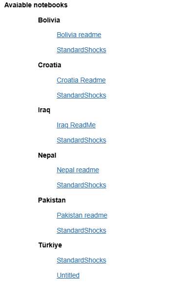

1. Using modelflow with World Bank models#
The Modelflow python package has been developed to solve a wide range of models, see the modelflow github web site for working examples of the Solow Model, the United States’ Federal REserve FR/USB model and others.
The package has been substantially expanded to include special features that enable it to work with World Bank models originally developed in EViews and designed to use the EViews Model Object for simulation.
This chapter illustrates how to access these models, how to load them into a modelflow anaconda environment on your computer, and how to perform a variety of simulations.
from modelclass import model
model.scroll_off()
1.1. Accessing a World Bank model#
At this time several World bank macrostructural models are available to download and use with modelflow. These include a macrostructural model for:
Indonesia
Nepal
Croatia
Iraq
Kenya
Bolivia
Each of these models has been developed as part of the outreach work of the World Bank. The basic modelling framework of each of these models is outlined in Burns et al. [2019] with specific extensions reflecting features of the individual country modelled.
This book uses as an example a climate-aware model (MFMod-CC) for Pakistan developed in 2020 and described in Burns et al. [2021].
When Modelflow has been installed the user can select which model to load. Just Select the countries/model name then press the submit button.
The models are distributed in as github repositories (repos) when the submit button is pressed the selected countries will be downloaded to the local computer. Each repo contains the model, data and notebooks which will work with the model and data. The user can use these notebooks for analysis or as starting point for additional analysis.
#This is for testing until we have all models in github repos
import yaml
loadspec = yaml.safe_load(open('../../repo_def.yaml','r'))
print(loadspec)
[{'description': '-- WB country models', 'repo_name': 'nnn'}, {'description': 'Pakistan model', 'repo_name': 'pak'}, {'description': 'Pakistan model version 2', 'repo_name': 'pak'}, {'repo_name': 'pak'}, {'description': '--- FTT models', 'repo_name': 'xxx'}, {'repo_name': 'FTT-Modelflow', 'owner': 'fdenning'}]
model.load_repo_widget(loadspec,destination='./wbmodels') # and be changed to for instance model.select_wb_models
{kind=link}
When the submit button is pressed, the github repos which has been selected is downloaded, and the notebooks present will be displayed like this.
{kind=link}
Note
The default download location is wbmodels\. The download location can be changed by setting the parameter destination= to another location.
Warning
A repo can only be downloaded one time. If the repo already has been downloaded it and you want to download it again either the previous downloaded folder and subfolders has to be deleted, or the new download has to be in another destination.
1.2. .display_toc() Displayed a list of the notebooks in current work folder and all subfolders.#
This this can be used if the user want to display the list of notebooks after the repo has been selected.